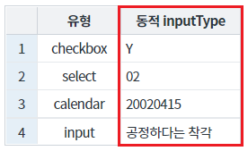
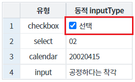
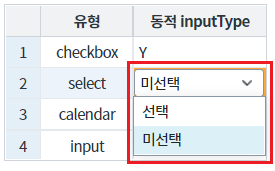
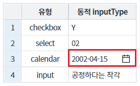
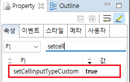
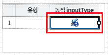
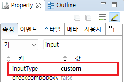
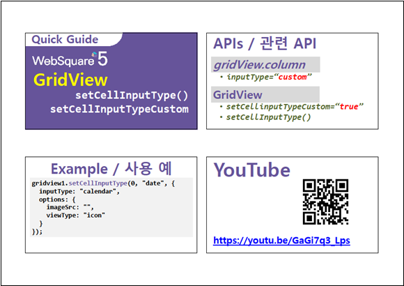

원하는 시점에 GridView 컬럼의 inputType을 변경하는 예제입니다.
GridViw 셀의 inputType 변경하기
GridView 컬럼 [동적 inputType]의 inputType이 기본 설정값인 "text"임을 확인합니다.
[브라우저(Chrome) 실행 예시]

버튼 1번째 행의 inputType을 "checkbox"로 변경하기을 클릭합니다.
1번째 행의 컬럼 [동적 inputType]의 InputType이 checkbox로 변경됨을 확인합니다.
[브라우저(Chrome) 실행 예시 - 실행 결과]

GridView 컬럼 [동적 inputType]의 inputType이 기본 설정값인 "text"임을 확인합니다.
[브라우저(Chrome) 실행 예시]
버튼 2번째 행의 inputType을 "select"로 변경하기을 클릭합니다.
2번째 행의 컬럼 [동적 inputType]의 InputType이 select로 변경됨을 확인합니다.
[브라우저(Chrome) 실행 예시 - 실행 결과]

GridView 컬럼 [동적 inputType]의 inputType이 기본 설정값인 "text"임을 확인합니다.
[브라우저(Chrome) 실행 예시]
버튼 3번째 행의 inputType을 "calenar"로 변경하기을 클릭합니다.
3번째 행의 컬럼 [동적 inputType]의 InputType이 calendar로 변경됨을 확인합니다.
[브라우저(Chrome) 실행 예시 - 실행 결과]

DataList 생성 및 연결은 생략되었습니다.
STEP1. GridView의 속성을 정의합니다.
[필수] setCellInputTypeCustom="true" //inputType이 custom인 셀의 inputType을 동적으로 변경하기 위한 옵션. (typeGetter와 동시에 사용 불가)
그림 1.웹스퀘어5 SP5 스튜디오의 Property View(속성창) 예시

동적으로 inputType을 지정할 컬럼의 속성을 아래와 같이 정의합니다.
예제 파일에서는 바디 컬럼의 ID "type_value"에 정의되었습니다.
[필수] inputType="custom" //동적으로 inputType을 설정.
그림 2.웹스퀘어5 SP5 스튜디오의 Design 탭 예시 - 컬럼 선택

그림 3.웹스퀘어5 SP5 스튜디오의 Property View(속성창) 예시

[소스 코드 예시]
<!-- gridView 의 소스 본문 예시 --> <w2:gridView setCellInputTypeCustom="true" id="grd_exam1" dataList="data:dlt_exam1"> <!-- 중략 --> <w2:gBody id="gBody1" style=""> <w2:row id="row2" style=""> <!-- 중략 --> <w2:column inputType="custom" id="type_value"> </w2:column> <!-- 중략 --> </w2:row> </w2:gBody> </w2:gridView>
셀의 inputType을 변경하는 스크립트를 작성합니다.
GridView의 Method setCellInputType을 사용합니다.
[소스 코드 예시]
//예제 파일의 스크립트 "scwin.btn_ex1_onclick"를 참고하세요. var jsnCellInfo; var numRowIndex; var strColID; strRowIndex = 0; //변경할 행의 index strColID = "type_value" //변경할 열의 ID strID = "dynamic_select_" + strRowIndex + "_" + strColID; //중복되지 않는 GridVIew의 셀 ID 생성 //inputType 정보 jsnCellInfo = { id : strID, inputType : "checkbox", options : {viewType: "icon"}, options : {valueType: "other", trueValue: "Y", falseValue: "N", checkboxLabel: "선택" } }; //GridView "grd_exam1"의 셀 inputType을 변경합니다. grd_exam1.setCellInputType(strRowIndex, strColID, jsnCellInfo);
STEP1. GridView의 속성을 정의합니다.
[필수] setCellInputTypeCustom="true" //inputType이 custom인 셀의 inputType을 동적으로 변경하기 위한 옵션. (typeGetter와 동시에 사용 불가)
그림 4.웹스퀘어5 SP5 스튜디오의 Property View(속성창) 예시
동적으로 inputType을 지정할 컬럼의 속성을 아래와 같이 정의합니다.
예제 파일에서는 바디 컬럼의 ID "type_value"에 정의되었습니다.
[필수] inputType="custom" //동적으로 inputType을 설정.
그림 5.웹스퀘어5 SP5 스튜디오의 Design 탭 예시 - 컬럼 선택
그림 6.웹스퀘어5 SP5 스튜디오의 Property View(속성창) 예시
[소스 코드 예시]
<!-- gridView 의 소스 본문 예시 --> <w2:gridView setCellInputTypeCustom="true" id="grd_exam1" dataList="data:dlt_exam1"> <!-- 중략 --> <w2:gBody id="gBody1" style=""> <w2:row id="row2" style=""> <!-- 중략 --> <w2:column inputType="custom" id="type_value"> </w2:column> <!-- 중략 --> </w2:row> </w2:gBody> </w2:gridView>
셀의 inputType을 변경하는 스크립트를 작성합니다.
GridView의 Method setCellInputType을 사용합니다.
[소스 코드 예시]
//예제 파일의 스크립트 "scwin.btn_ex2_onclick"를 참고하세요. var jsnCellInfo; var numRowIndex; var strColID; strRowIndex = 1; //변경할 행의 index strColID = "type_value" //변경할 열의 ID strID = "dynamic_select_" + strRowIndex + "_" + strColID; //중복되지 않는 GridVIew의 셀 ID 생성 //inputType 정보 jsnCellInfo = { id : strID, inputType : "select", options : {viewType: "icon"}, itemSet : { nodeset: "data:dlt_code", label: "label", value: "code" } }; //GridView "grd_exam1"의 셀 inputType을 변경합니다. grd_exam1.setCellInputType(strRowIndex, strColID, jsnCellInfo);
STEP1. GridView의 속성을 정의합니다.
[필수] setCellInputTypeCustom="true" //inputType이 custom인 셀의 inputType을 동적으로 변경하기 위한 옵션. (typeGetter와 동시에 사용 불가)
그림 7.웹스퀘어5 SP5 스튜디오의 Property View(속성창) 예시
동적으로 inputType을 지정할 컬럼의 속성을 아래와 같이 정의합니다.
예제 파일에서는 바디 컬럼의 ID "type_value"에 정의되었습니다.
[필수] inputType="custom" //동적으로 inputType을 설정.
그림 8.웹스퀘어5 SP5 스튜디오의 Design 탭 예시 - 컬럼 선택
그림 9.웹스퀘어5 SP5 스튜디오의 Property View(속성창) 예시
[소스 코드 예시]
<!-- gridView 의 소스 본문 예시 --> <w2:gridView setCellInputTypeCustom="true" id="grd_exam1" dataList="data:dlt_exam1"> <!-- 중략 --> <w2:gBody id="gBody1" style=""> <w2:row id="row2" style=""> <!-- 중략 --> <w2:column inputType="custom" id="type_value"> </w2:column> <!-- 중략 --> </w2:row> </w2:gBody> </w2:gridView>
셀의 inputType을 변경하는 스크립트를 작성합니다.
GridView의 Method setCellInputType을 사용합니다.
[소스 코드 예시]
//예제 파일의 스크립트 "scwin.btn_ex3_onclick"를 참고하세요. var jsnCellInfo; var numRowIndex; var strColID; strRowIndex = 2; //변경할 행의 index strColID = "type_value" //변경할 열의 ID strID = "dynamic_select_" + strRowIndex + "_" + strColID; //중복되지 않는 GridVIew의 셀 ID 생성 //inputType 정보 jsnCellInfo = { id : strID, inputType : "calendar", options : {viewType: "icon"}, options : {viewType: "icon", dataType: "date", displayFormat: "yyyy-MM-dd"} }; //GridView "grd_exam1"의 셀 inputType을 변경합니다. grd_exam1.setCellInputType(strRowIndex, strColID, jsnCellInfo);
setCellInputTypeCustom
[body column] inputType
setCellInputType( rowIndex , colIndex , info )
[웹스퀘어5 SP5 개발 가이드] GridView
링크 : https://docs1.inswave.com/sp5_user_guide/86bdcf48029b958b
[웹스퀘어5 SP5 개발 가이드] GridView의 inpuType 종류
링크 : https://docs1.inswave.com/sp5_user_guide/86bdcf48029b958b#e234842b00bfc33a
[웹스퀘어5 SP5 개발 가이드] GridView의 inputType 동적 변경 (setCellInputTypeCustom & setCellInputType())
링크 : https://docs1.inswave.com/sp5_user_guide/86bdcf48029b958b#11cfcfd1c0349538
GridView의 inputType 동적 변경 (setCellInputTypeCustom & setCellInputType())
링크 : https://youtu.be/GaGi7q3_Lps
